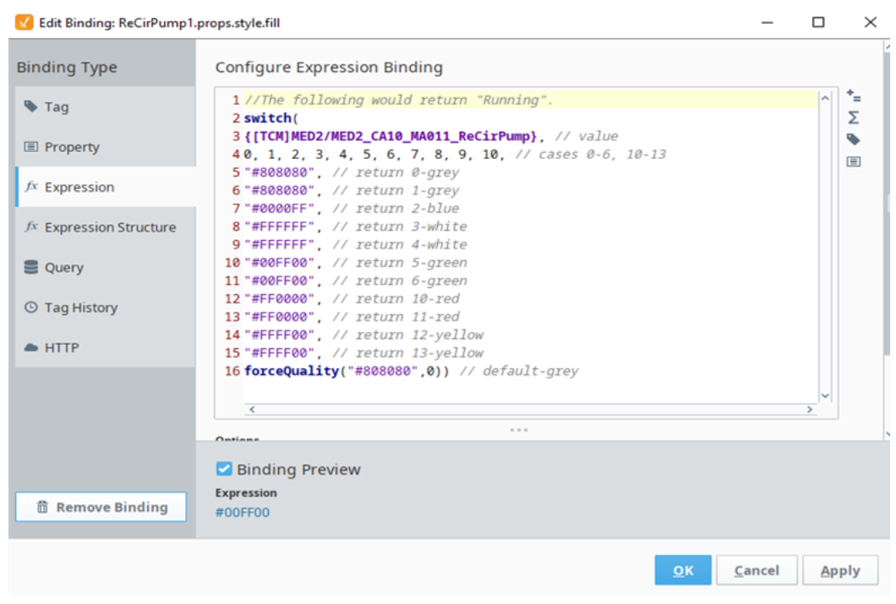
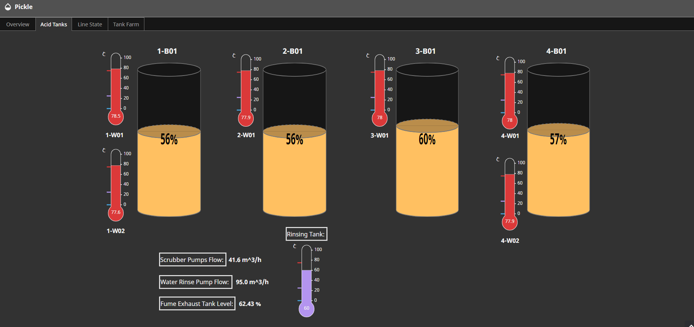

What?
- Design several different web pages that are user friendly, readable, and display accurate live time PLC data updates.
- Create these web pages to amplify cross-company communication and enhance visibility into plant operations.

How?
- Leveraging Ignition as the website platform, I coded and designed individual pages using Inkscape to illustrate various operations, while employing Python for automating specific graphics.

Results
- Developed a fully operational website that effectively presents diverse plant operations, enhancing communication and facilitating swift identification of non-operational areas.